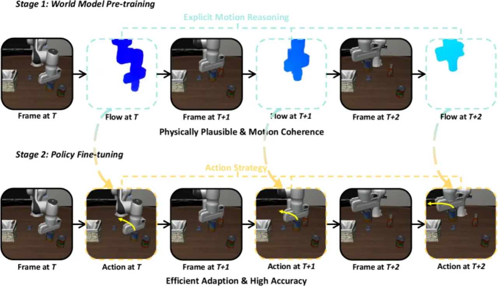
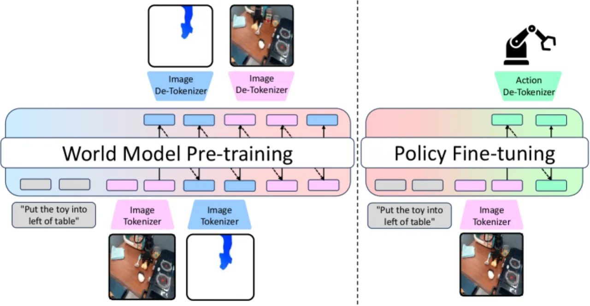
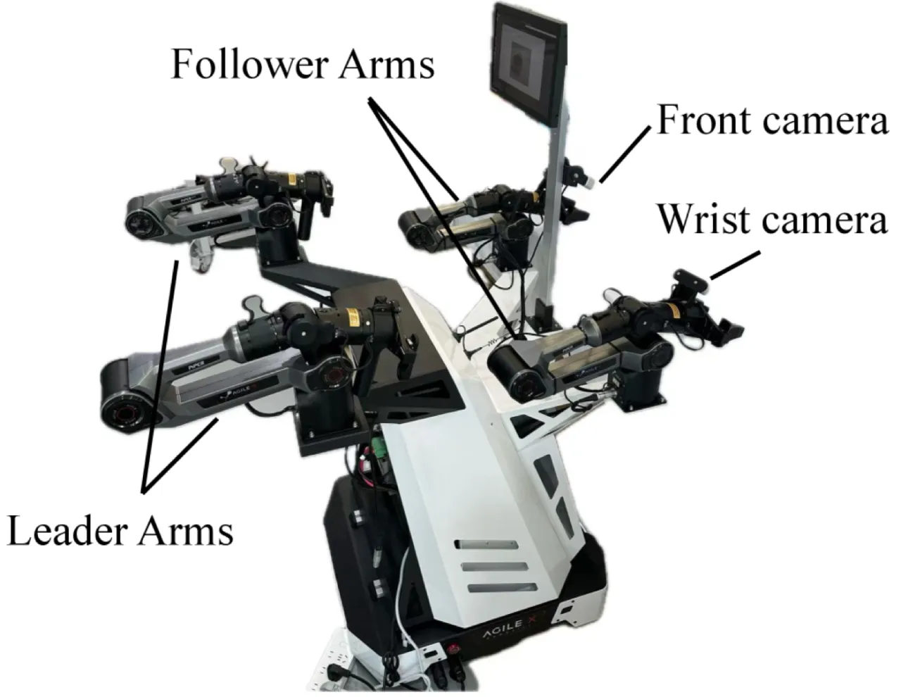
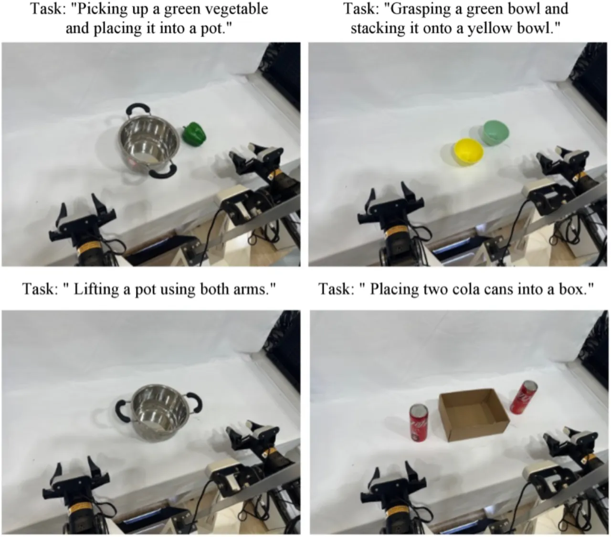
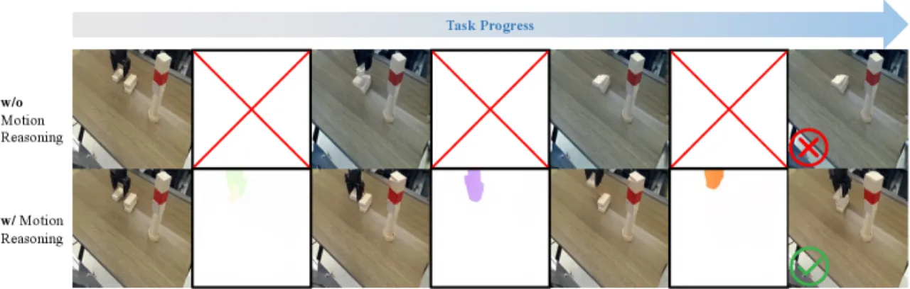
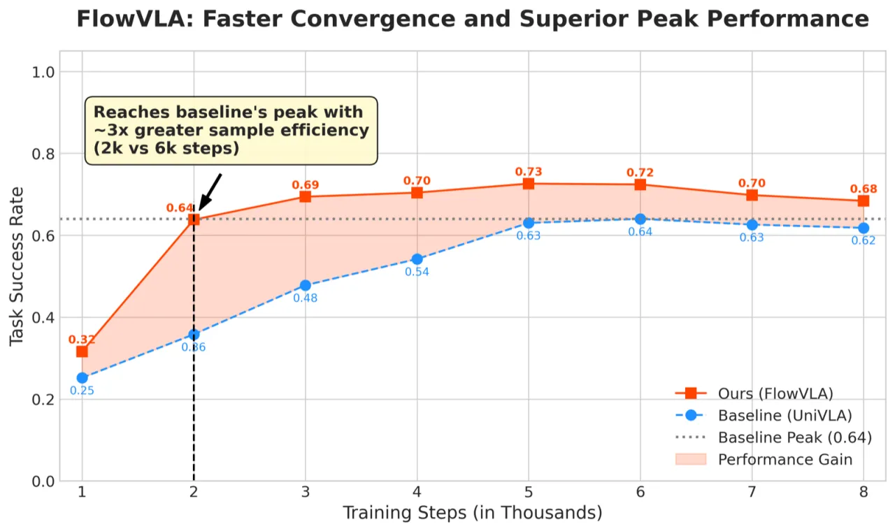

FlowVLA 提出"视觉思维链（Visual Chain of Thought）"范式：在预测未来帧外观之前，先显式推断光流（运动动态）。与直接预测下一帧的传统 VLA 世界模型相比，FlowVLA 生成的视觉预测更符合物理规律，同时在多个机器人操作基准上取得最优策略性能，并在数据效率上显著优于基线。
当前主流 VLA 模型依赖基于"next-frame prediction"训练的世界模型，试图直接预测未来帧的外观，而不显式建模底层的运动动态。这导致两个核心问题：预测在物理上不合理（物体凭空消失、机械臂轨迹混乱），且预训练目标与下游动作生成之间存在明显的领域鸿沟。
"This approach attempts to predict future frame appearance without explicitly reasoning about underlying dynamics, leading to physically implausible visual forecasts and inefficient policy learning."

传统世界模型陷入"pixel-copying trap"：模型只是复制静态背景而非理解时空动态，导致"blurry, inconsistent, and physically implausible long-horizon forecasts"。FlowVLA 通过在帧预测前插入光流预测步骤，强迫模型先理解"场景如何运动"，再推断"场景将呈现什么样子"。
FlowVLA 将世界模型的预测目标从 P(vt+1|vt, L) 重新表述为 P(vt+1, ft|vt, L)，分解为两步：先由当前帧和语言指令预测光流（Motion Reasoning），再由光流和当前帧预测未来帧（Appearance Generation）。整个系统采用统一的 autoregressive Transformer，共享同一个 VQ-GAN tokenizer 处理 RGB 帧和光流场。

FlowVLA 的核心创新是将预测序列从 vt → vt+1 扩展为 vt → ft → vt+1，其中 ft 是 t 时刻的光流场。世界模型预训练的完整序列为：
Swm = {Linstr, v0, f0, v1, f1, …, vT, fT}
训练目标为：
LWM = Σ [LCE(ft | S<vt+1) + λ · LCE(vt+1 | S<vt+1, ft)]
第一项约束模型正确预测运动动态，第二项约束在运动条件下生成合理的未来外观。
光流场通过 VideoJAM 技术转换为 3 通道 RGB 表示，再经过非线性归一化处理：
mnorm = min(1.0, m / (σ · √(H² + W²)))，其中 σ = 0.15
归一化后的光流 RGB 与原始 RGB 帧使用完全相同的 VQ-GAN tokenizer 离散化。这种设计避免了为光流单独训练编码器的额外开销，同时允许模型在统一的 token 空间内对运动和外观进行联合建模。
在大规模视频数据上，以交错序列格式预训练 autoregressive Transformer，同时学习光流预测和下一帧预测。预训练使模型具备物理合理的视觉预测能力。
在机器人操作数据集上微调，动作 token 被附加到序列末尾，损失"only over the action tokens"。世界模型预训练的视觉表征为策略学习提供了良好初始化。
在三个层次的基准上评估：LIBERO（仿真，4 个 task suite）、SimplerEnv（仿真，视觉域迁移鲁棒性）、AgileX Cobot 双臂真实机器人（4 个操作任务）。主要对比基线为 UniVLA 和 WorldVLA。
| 方法 | LIBERO-Spatial | LIBERO-Object | LIBERO-Goal | LIBERO-Long | 平均 |
|---|---|---|---|---|---|
| WorldVLA | 92.3 | 93.0 | 83.3 | 47.9 | 79.1 |
| UniVLA | 93.1 | 96.9 | 91.0 | 63.0 | 84.0 |
| FlowVLA | 95.1 | 97.2 | 87.5 | 72.6 | 88.1 |
FlowVLA 在平均成功率上超过 UniVLA 4.1 个百分点，在长时序任务（LIBERO-Long）上的提升最为显著（72.6% vs. 63.0%），体现了运动推理对长视野规划的重要性。
| 方法 | Pick Coke Can | Move Near | Stack Block | 平均 |
|---|---|---|---|---|
| UniVLA | 85.3 | 70.0 | 41.6 | 65.6 |
| FlowVLA | 83.0 | 76.5 | 62.5 | 74.0 |
SimplerEnv 考察视觉域迁移鲁棒性。FlowVLA 在需要精细空间推理的"Stack Block"任务上相对 UniVLA 提升 20.9 个百分点（62.5% vs. 41.6%）。
| 方法 | Pick & Place | Grasp & Toss | Handover | Place Vegetable | 平均 |
|---|---|---|---|---|---|
| UniVLA | 25.0 | 40.0 | 19.0 | 40.0 | 31.0 |
| FlowVLA | 30.0 | 50.0 | 36.0 | 60.0 | 44.0 |




| 配置 | 成功率 (%) |
|---|---|
| 完整 FlowVLA | 73.0 |
| 移除 CoT（无光流预测步骤） | 64.0 |
| 移除 flow loss（光流无监督） | 69.5 |
| 使用 grouped sequence（非 interleaved） | 49.4 |
三项组件缺一不可：Visual CoT 结构（+9.0 pp）、直接光流损失监督（+3.5 pp）、以及交错序列格式（vs. 分组格式 +23.6 pp）均对最终性能有显著贡献。交错格式的大幅优势表明，将运动 token 与外观 token 紧密交织对于捕获时序依赖至关重要。
FlowVLA 的视觉思维链依赖光流预测的准确性作为中间步骤。若场景中存在快速运动、遮挡或纹理稀疏区域，光流估计本身可能失准，进而传递误差到未来帧预测和动作生成。论文未讨论光流预测失败时的 fallback 策略。
插入光流 token 将预训练序列长度约翻倍（Swm 同时包含 ft 和 vt+1），增加了预训练阶段的计算开销。论文未提供与基线的 FLOPs 或推理延迟对比数据，在实时机器人控制场景中的延迟影响尚不明确。
真实机器人实验（Table 3）仅在 AgileX Cobot 双臂平台上进行 4 项任务评测，每项任务仅报告单一成功率数值，缺乏跨平台、跨机器人形态的泛化性验证。作者承认这是当前工作的局限，并将更大规模的真实世界评测作为未来工作方向。